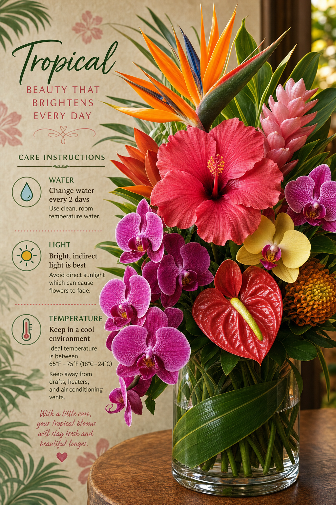

One of the most common questions we get at Pikake Floral Studio is: "How do I keep my tropical flowers fresh as long as possible?" Hawaii's warm, humid climate is actually quite different from what many mainland flower care guides assume, so there are some island-specific tips that make a real difference.
The Basics: Clean Water and a Clean Vase
This sounds obvious, but it's the most important step. Always start with a thoroughly clean vase — residual bacteria from previous arrangements will dramatically shorten the life of fresh flowers. Wash with hot soapy water, rinse well, then fill with room-temperature (not cold) water. In Hawaii's heat, cold water can shock tropical stems.
Cutting the Stems
Re-cut stems at a 45-degree angle before placing in water. This increases the surface area for water absorption. Use sharp scissors or a floral knife — crushing the stem with dull scissors restricts water flow. Cut stems under water if possible to prevent air bubbles from entering the stem.
The Hawaii Humidity Factor
Hawaii's humidity is actually beneficial for tropical flowers — they evolved in humid environments and don't dry out as quickly as in air-conditioned mainland homes. However, if you're in a heavily air-conditioned space, mist your flowers lightly with a spray bottle of water each morning to compensate.
Keep Away from Ethylene Sources
Ripening fruits — particularly bananas, apples, and papayas (all common in island kitchens!) — emit ethylene gas that dramatically accelerates flower aging. Keep your arrangements away from the fruit bowl. Also keep flowers away from open windows that face traffic, as exhaust is another ethylene source.
Flower-Specific Tips
Anthuriums: These incredibly long-lasting flowers (2–4 weeks!) prefer room temperature and indirect light. Mist the spathe (the flat, colorful part) lightly each day. Orchids: Cut orchid sprays last 1–2 weeks in water. Change water every three days and add a drop of bleach to prevent bacteria. Plumeria: Surprisingly, plumeria can be displayed without water! The blooms look beautiful floating in a shallow bowl of water or simply placed in a small dish. They last about three days this way. Pikake: These delicate blossoms are best used in a lei or as a floating garnish. They wilt within hours in a vase but their fragrance lingers beautifully.
When to Visit the Shop
For maximum freshness, pick up your flowers as close to your event as possible. We always recommend same-day or day-before pickup for weddings and events. For weekly subscriptions, Tuesday and Thursday pickups tend to yield the freshest blooms as that's when our local farm deliveries arrive.